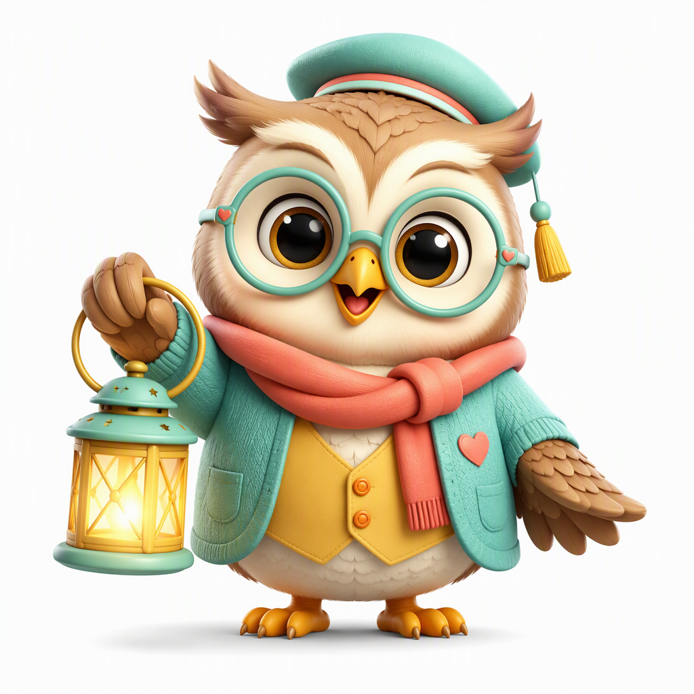

新增案例 · 军团 Harness
Lumi · 和猫头鹰一起学
和猫头鹰一起玩无声的 3 关 9 题：水果、动物和颜色。看图点选，答对后可以试着说一个英语词；表达可跳过，不开口也能继续玩。

Interactive learning · 2026-10-23
这里收录从真实想法出发做出来的互动作品。打开玩一玩，比看一份介绍更有意思；每个案例也会讲清楚，它现在能做什么、还不能做什么。
新增案例 · 军团 Harness
和猫头鹰一起玩无声的 3 关 9 题：水果、动物和颜色。看图点选，答对后可以试着说一个英语词；表达可跳过，不开口也能继续玩。

案例目标：做一个学前英语口语启蒙作品，让孩子愿意探索、尝试表达，并逐渐学会自己学、讲给别人听。
一句话是起点，作品不是一次生成就结束。军团在内部理解需求、设计实现、验证和返工，也吸收后续试用反馈，再回到同一个作品继续改。
这是小而完整的首版玩法：固定关卡、有提示的图片选择和可跳过的表达邀请。不是严格的词汇量测评，也不是完整的个性化教学系统；「练过」和点击「我说了」都不等于独立掌握。
此处是可独立打开的公开静态试玩版，不连接在线模型，不播放声音、不录音。互动和记录在当前浏览器中完成，请勿填入真实儿童身份资料。软件验收不等于真实儿童学习效果，也不代表已完成长期教学验证。
素材说明：Lumi 猫头鹰插画为本项目借助 AI 生成的展示素材（2026年10月21日）。
Legion
岛屿探索、角色互动、场景动画与本地规则反馈。在线模型对练未接通。
打开作品Orca
三段情境任务、浏览器语音识别和卡片／文字退路；反馈主要基于规则。
打开作品Paseo
故事场景、引导表达、录音回放与预制故事短片；刷新后录音不会保留。
打开作品HarnessRouter
太空送信任务与语义规则互动；没有浏览器语音识别时只能录音回放，不能完成语义任务。
打开作品